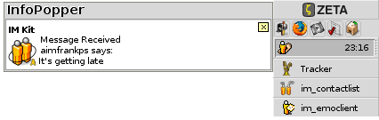

The Instant Messenger
Utilities
Keeping Logs Over Your Conversations
The Instant Messenger kit comes with it's own log solution, consisting of the three tools im_binlogger, im_logger and im_binlog_viewer. To enable the logging of all conversations, you must open the IM kit preferences and mark im_binlogger to be auto-started. im_binlogger will then be automatically started together the im_server.
Just as you can start a conversation from the Open with... menu, you can read logs over previous conversations by choosing the im_binlog_viewer. The log viewer can also be accessed from the toolbar in the im_client.
Each entry in the log that gets created for each buddy starts with the Date, followed by the Protocol and the Sender (Contact). The Contents will show the conversation or changes in the online status, which is indicated with the last column Type.
Adding Avartars to Your Buddies
The IM Kit doesn't support transfer of avartars (portrait icons) for other platforms then AIM, but utility IconSetter lets you set an icon for a Person. As IconSetter is a shell application you must first open the Terminal, and drag the IconSetter application on to the Terminal (or write the path to it). Then drag the People file that you want to add an avartar to (or again write the path). You can choose for what IM protocol the icon should apply to, or that it should be used in "general" for that Person. If you choose to set the avartar to be used in "general" for a People file, InfoPopper will look for the "general" icon when you are receiving mails from your contacts. For those of your contacts that don't have such an icon set, the default mail icon will be used.

As this works for all kinds of incoming mail, you might want to set up a Person file just to represent the Dictionary.com word of the day and then add a suitable "general" icon to be shown when the word of day gets received.
Merging Contacts
The first time you log on with the installed protocols, the IM kit will download your buddy lists from the protocols that you have accounts for: AIM, ICQ, MSN and/or Yahoo!. The IM kit will automatically generate Person files with Screen Name and UIN information stored in the IM Connections attribute. No other information will be stored to these Person files, and they will therefore appear as unkown contacts. By using the Tracker Add-On IM_Merge, you can merge these two contacts and their attributes together. For most situations we recommend you to choose the second merge direction: "Unknown contact" > "Registered contact".
After having merged these Person files, you might have some friends that you haven't chatted with before. To add information about their IM Connections, simply click on their IM Connections field and add the protocols that they are using. Screen Names and UIN are written in the following way: AIM:industroslaad and ICQ:1595259. If a person is using more than one protocol, you can register them all in the same field. The protocols are than separated with a ;.